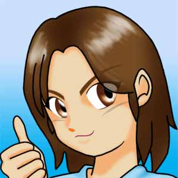
よっ♪ 俺がこの物語の主人公、西原 裕二（きさらぎ ゆうじ）だ。
俺は、機械加工工場で鍛冶屋（刀職人じゃないよ）を、やっていたんだ。
アーク溶接の腕前も、工場の社長や先輩達のお墨付き！
将来は、親方張って一人前にやってゆける、『金の卵』とさえ言われていたんだぞ。
それに、図面も読めるようになってきて、俺もこの仕事でやってゆける自信がついていた。
どうだ、なかなかのもんだろう？
まぁ、俺は男にしては背が低い方だし、けっしてハンサムとは言わない。
それに、好きな女性を前にすると、緊張しちゃって思うように話せなくなるけど、
それでも、そこそこは自分に自信はあったんだ。
でもさぁ・・・・
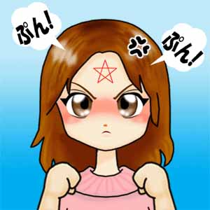
今は、こんなだぜ・・・・
どう見ても誰が見ても、『女の子』にしか見えないだろう？
はぁ？ 子供じゃねぇーよ！ 俺は２１歳の成人だぞ！ 嘘じゃないって、本当なんだってば
でも、確かにこの姿・・・・どう見ても小学生か、良くて中学生だよなぁ・・・・
背は小っちゃいし、時々女の子っぽい感情が俺の思考を支配するし、すぐに泣いちゃうし・・・・
なぜ俺が、こんな体になったかと言うとだなぁ・・・・
まぁ、それは例のごとく、俺の過去の日記を見てくれれば解る。
とにかく、俺は女の子に成っただけじゃなく、魔女に成ってしまったんだ。
俺の額には、『赤い五芒星』が、あるだろう？ それが、魔女の証なんだよ。
そして今回、俺はもっとヘンテコなものに、変身しちまったんだなコレが・・・・
それはな・・・・
あぁあぁあぁ〜〜〜〜もぉおぉおぉ〜〜〜〜！！ なんで、こんな変な目にばっかり、遭っちゃうのぉ！？
★女装剤７★
「新しい暮らしと猫耳と」
作：逆流人（ぎゃくると）
「新しい暮らしと猫耳と」
作：逆流人（ぎゃくると）
ある日のこと・・・・
裕二は愛と一緒に、ある施設へ出掛けていた。
なんのために？ それは、実質無職である裕二が、愛の仕事である 『更生施設の指導員の補佐』 のアルバイトをするため。
もちろん、この話を持ち掛けてきたのは、愛本人である。
最初は、裕二は断っていた。
人に騙され、犯罪に手を染めてしまった者。 家庭や学校で、人と接する事が出来ずに自傷行為をする者。
理由は様々だが、愛の働く施設とは、社会復帰を目指す少女達を更生するために設立された施設だ。
だから、裕二は自信が無かったのだ。 とても自分に出来る仕事じゃないと思ってたからだ。
でも結局、愛さんの押しに負け、見学をさせてもらう事となった。
場所は、裕二の住む住宅街から、それほど離れていない場所。 その施設の名は、『更生保護施設 ゆめ』 だった。
実は、愛もこの施設から更生した一人とのこと。 でも今じゃ、その施設の指導員をしている。
裕二は信じられなかった。 いつも裕二に優しい愛が、まさか以前は手の付けられない不良娘で、
実は傷害事件を起こしてしまい、『元刑余者』だったなんて・・・・
中学の頃から、愛は魔女として覚醒していた。
でも、裕二や夏海達のように、魔力に触れたり関わる事で魔女として覚醒したわけじゃなく、愛自身が自ら、魔女として覚醒したのだ。
その頃、愛は自分の能力（魔法の力）に悩んでいた。
始めは、『霊能力』だと、愛は思っていた。
人に見えないものが見え、人に聞こえない声が聞こえるからだった。
愛には、人間の邪心を、見たり聞いたりする能力があったのだ。
愛は、人と接する事を拒むようになり、やがて閉じこもるようになる。
だが、それでも人々の心の叫びや、悪意に満ちた邪心が見えてくる。
愛は、段々と荒んでいった・・・・
人を信じる事が出来なくなっていったのだ。
そして愛は、逃げる事から攻める方へと変わってゆく。
触れる者、近づく者を、片っ端から傷つけていった。 男であろうと女であろうと、愛に対して敵意を持つ者全てを・・・・
街中をフラフラと歩いては、近寄る不良や、弱い者を傷付ける者達を、一掃するという暮らしが続いた。
人間ではなく魔女なのだから、どんな腕力の強い者が来ようとも、どんな凶器を持つ者が現れようとも、
たとえ愛が意図して魔法を発動させなくても、愛が負ける事など有り得なかった。
少しでも、この世から『悪』を消したかった。 人間の持つ邪心から、解放されたかったのだ。
愛の知らず知らずのうちに、愛の負の念から発された負の魔力によって、
ことごとく、近寄る敵をちぎっては投げ捨てた。
やがて愛は、『ジャンヌ』 と呼ばれるようになる。
そんなとき、母親の藍那に連れられて、『更生保護施設 ゆめ』 に、強制的に入居されたのだった。
その施設の責任者は、「浅田 美代子（あさだ みよこ）」
実は彼女も、裕二の母親である伸江と同じ魔女の森の出身、魔女なのである。
もちろん、今まで愛に起きた理解できない事柄は、すべて愛の持つ魔力のものだと知らされた。
愛本人も、魔女だと知らされたのだ。
そして、施設で暮らすようになった愛は、徐々に明るさと取り戻し、人の邪心を覗き見る力も制御する事ができるようになる。
このとき、愛は高校３年生だった。
そして、今に至るという・・・・
裕二：
「・・・・ここぉ？」
愛：
「そうよ。 ふふふ♪ そんなに緊張しないで！ 浅田さんも、魔女なんだから私達の仲間なのよ。
だから、ゆうちゃんも魔女だからって、何も心配なんてしなくて大丈夫だから♪」
裕二：
「はぁ・・・・」
別に、そんな事など気にしてはいなかった。 俺が気にしているのは、ココでアルバイトなんて俺に出来るのか？ って事なのだ。
建築関係の仕事や、介護関係の仕事なら何とか出来るとは思うけど、今回は全くの畑違いの仕事。
たとえ愛さんの仕事を手伝うだけ・・・・更生施設の指導員の補佐だと言っても、何をすればいいのか分からないし、
下手をすれば、自分の言動が、施設の利用者達を傷付けてしまうかも知れないと思ったから不安だったのだ。
その施設の外見は、２ｍ以上はあるかと思うほどの、コックリートの壁に覆われていて、門も大きな鉄門となっている。
建物自体はペンション風の大きな三角の屋根で、ログハウスみたいな造りで、とても感じのいいもの。
でも、関係者以外の立ち入りを禁止し、更に女性だけの入居となっているため、
郵便物などの受け入れも、全て門から外でするらしい。
必要以上の外部との接触を防ぐためとか？ でもこれじゃぁ、留置所みたいだよな・・・・
俺は、女の子の姿で、今ココへ来ている。
じゃないと、俺はこの施設へ入れないからだ。
愛：
「じゃぁ、行きましょうか！」
裕二：
「ゴクッ！・・・・はい。」
裕二は、唾を飲んで愛の後を付いて行く。
そして出迎えてくれたのは、この施設の責任者、浅田さんだ。
浅田：
「あ、おはよぉ〜！」
愛：
「おはようございますぅ〜」
裕二：
「お、おはようございます。」
浅田：
「あ、あなたが西原 ゆう さんね？ 初めまして。」
裕二：
「は、初めまして・・・・よ、よろしくお願いしますですはい。」
浅田：
「ぷっ♪ クスクスクス・・・・聞いたとおりの娘ね？」
裕二：
「え？」
愛：
「そうでしょう？ もぉ〜私、この娘が可愛くて可愛くて」
裕二：
「・・・・
（赤面） 浅田：
「クスクスクス♪ まぁ、ココじゃなんだから、中へ入りましょう！」
愛：
「はい！ じゃぁ、行こうっか。」
裕二：
「はい・・・・」
ドキドキ・・・・
裕二は、ソワソワしながら、施設の中へと入って行った。
玄関には、女の子の靴が幾つか並んでいた。
愛さんが居た頃には、愛さんを含めて４人居たというが、今は２人しか居ないようだ。
愛さんは、「ちょっと待っててね」
と言って、施設の奥へと入って行った。
浅田さんは、裕二をリビングのソファーに座らせ、この施設について話し始める。
浅田：
「この施設ではね、今は２人の女の子を世話しているのよ。」
裕二：
「あ、はい。」
浅田：
「一人は、女性仮性半陰陽と言われる病気でね、ココへ来る１年ほど前までは、男の子として暮らしていた娘なのよ。」
裕二：
「はい！？ そ、そうですか。 へぇ・・・・」
女性仮性なんとか？って、ネットか何かで見た覚えがある。
男なのに女みたいな姿で生まれてきたり、その反対に女なのに男みたいな姿で生まれてくる病気の事だよな。
なるほど、だからココで女性として暮らせるように、訓練や指導を受けているって訳か・・・・
浅田：
「もう一人はね、昔の愛さんに似た娘でねぇ、ハッキリ言ってしまえば、手の付けられない”不良娘” ね。」
裕二：
「はぁ・・・そう・・・・ですか。」
浅田：
「ココへ来た当事は、本当に凄かったのよ。 ガラスは割られるし、飛び出して帰って来ないし、
警察のお世話になる事だって、一度や二度じゃなかったからね。」
裕二：
「へ・・・へぇ・・・・そうっすか
なんだか怖いな・・・・
ココで指導を受けるって事は、家族さえも手に負えなくなって、ハッキリ言ってしまえば家から放り出されたって事だよな。
でも、施設の中へ入ったとき、浅田さんは何か特殊な器具で入り口のドアに鍵をかけていた。
だから、浅田さんの持つ器具がなければ、外には出られないって事か。
利用者が、勝手に外へ抜け出さないようにするためだろうけど、なんだかものものしいなぁ・・・・
でも、それくらいしないと、利用者を保護する事が出来ないって事なんだろうなぁ。
浅田：
「もう一人は、私の娘で、”ゆき” が居るけど、今は仕事に出ているわ。 夜には帰ってくるから、そのとき紹介するわね。」
裕二：
「はぁ・・・・」
浅田：
「実は、ココに住む女の子達は、魔法クラブのメンバーであり、魔術師なのよ。」
裕二：
「えっ？ そうなんですか！？」
浅田：
「そう。 でも今は、ココで暮らしているから、魔法クラブには出ていないけどね。」
裕二：
「へ・・・・へぇ〜そうなんですか。」
浅田：
「だから、私や私の娘や愛さん、そしてあなたが魔女だって事だけを秘密にすれば、
多少の魔法や魔導具の話しをしたって、別に支障はないから安心してね。」
裕二：
「はぁ・・・・」
なるほど・・・・そう言うわけか。
この施設の意味が、なんとなく解かったような気がした。
浅田さんは魔女だから、単に保護を必要とする少女達を受け入れるだけじゃなく、
魔法や魔導具に関係する少女達を保護するために、ココは存在するんだなって。
なんでもいいけど、ズケズケとハッキリ言う人だな。
そんな個人の事を、今日初めて会った俺になんか話してもいいものなのか？
まだココで、アルバイトをするって決まったわけじゃないのに・・・・
なんて思っていた。
すると、愛さんが戻ってきた。 どうやら、この施設に住む女の子達を、起こしに行っていたようだ。
愛さんの後を、二人の女の子が付いて来る。
一人は、どこにでも居るような、普通の女子高生風の可愛らしい女の子。
そしてもう一人は、見るからに気の強そうな背の高い女の子で、俺と目が合うなり、睨みつけやがった。
ムカッ・・・・ ときたが、ココは大人しくしていた方が良さそうだと思い、何も気にしていない振りをした。
そして浅田さんは、順々に彼女らを俺に紹介し、最後に俺を紹介してくれた。
が・・・・
浅田：
「コチラは、”高島 美鈴”さん。」
裕二：
「・・・・どうも」
美鈴：
「よろしく」
裕二：
「あ、よ・・・・よろしく。」
へぇ・・・・この娘が、女性仮性なんとかっていう病気の娘か。
そんな病気があることは知っていたが、ぱっと見ても普通の女の子にしか見えない。
結構可愛い娘だし、この娘が以前は男の子として生きてきただなんて・・・・
あ、そっか。 だからココで女の子として指導を受けているんだっけか。
浅田：
「で、ソチラが、”岩崎 清子”さん。」
裕二：
「あ、よろしく」
清子：
「・・・・ふんっ！」
裕二：
「！？・・・・
なんだコイツ・・・・ムカッ
出て来たときから目を合わそうとはしなかったが、俺をチラッと見たかと思えば、
「ふんっ！」
だってぇ？ なんだそりゃ？ それが初対面の者に対する態度か？
俺は、ココで働く事になれば、きっとコイツとは一悶着ありそうなだ・・・・と思った。
二人を紹介されてから、次に俺を二人に紹介する浅田さんだったが、
その浅田の言葉に、俺は思わず飛び跳ねた。
浅田：
「ほら、この娘が此間から話していた、ココであなた達と一緒に暮らす事になった、西原 ゆう さんよ。」
裕二：
「ぇえっ！ なんだってぇ！？」
俺は、思わず叫んでいた。
ココで、俺はアルバイトをするために来たのに、浅田さんは何を言うかと思えば、俺がココで暮らすだってぇ！？
そんな話し、聞いてないぞ！！
裕二：
「ちょちょ・・・ちょっと待ってください！！ 俺、ココで暮らすなんて聞いてませんよ！」
美鈴と清子：
「！？・・・・」
愛：
「ごめんね、ゆうちゃん」
裕二：
「んみゃ？」
浅田：
「あなたのお母さんから頼まれててね、あなたをココで女の子として調教・・・・じゃなくて、
立派な女性として暮らせるように、指導してほしいって言われてるのよ。」
裕二：
「はぁい！？ 母さんが頼んだのか？！ ちっきしょぉ〜！ また勝手に決めやがってぇ〜！ 帰るっ！！」
浅田と愛：
「！！」
俺は、そんな話し聞いていないし、勝手に決められた事に怒りを感じ、そのまま帰ろうとした。
すると、愛が俺の手を引き、無理やりまたソファーに座らせる。
愛：
「ゆうちゃん、待ってっ！！」
グイッ！ （裕二の手を引く愛）
裕二：
「みゃ！」
バフッ！
（ソファーに勢いよく尻餅をつく裕二）
裕二：
「きゃふっ！！ 愛さん、なにを・・・・」
愛：
「ゆうちゃん！ こうしないと、ゆうちゃんは立派な、ま・・・・女性に成れないのよ！
ゆうちゃんの望みを叶えるためには、こうするしかないの！！」
裕二：
「冗談じゃないですよぉ！ 愛さんまで俺を騙して！！」
愛：
「ゆうちゃぁん！！」
裕二：
「誰に何と言われようとも、俺は帰ります！ ココまでしてまで、俺は立派な女になんか成りたくない！！」
浅田：
「なるほど・・・・この娘は、かなりの重症のようね。」
裕二：
「んなっ！？」
浅田：
「愛さん、先は長いかも知れないけど、頑張りましょう！」
愛：
「はい」
裕二：
「ちょっと待ってくれっ！！ 俺は、こんなの嫌だ！」
浅田：
「いい加減に、諦めなさい！！」
パチィン！！
裕二：
「きっ！・・・・」
愛と美鈴と清子：
「！！・・・・」
浅田さんは、そう叫んだと思ったら、いきなり俺の左頬を引っ叩いた。
俺は、左頬を押さえ、震える下唇を噛み、悔しくて腹立たしくて溢れる涙を拭いもせずに、浅田さんを睨んでいた。
俺は立派な女性に成るために、魔法の修行をしているんじゃない。
完全な男に戻る魔法を開発するために、魔法の修行をしているんだ。
そのためには、女として魔女として生きなければならない事など解かっている。
でも、なにもココまでしなくても・・・・
涙が止まらなかった。 なんで俺がこんな目に遭わなければならないんだ？
裕二：
「えふっ・・・・すん・・・・すん・・・・なんで？ なんでこんな目に遭わなきゃいけないんだ？」
愛：
「ゆうちゃん・・・・」
浅田：
「ほら、ちゃんと座って！ ココまで来たいじょう、あなたを立派な女性として家に戻れるように、
私も精一杯、努めさせてもらいますからね。」
裕二：
「えうぅうぅ・・・・すん・・・・すん・・・・」
愛：
「ゆうちゃん、一緒に頑張ろう？ ね？」
美鈴と清子：
「・・・・」
裕二：
「・・・・すん・・・・すん・・・・」
その後、この施設での規則を浅田さんから聞いた。
浅田：
「ココでの暮らしは、自分の事は自分ですること。 朝食、昼食、夜食とも全て自分達で料理して食べること。
掃除、洗濯なども自分でね！ 朝は６時起床で、夜は遅くても１１時には床につくことって決まってるけど、
ま、各自それなりに用事があるのなら、健康管理を怠らない程度に考えておいてね。
外泊や外食は一切厳禁。 買い物は、みんなで一緒に行きます。 一人での外出は絶対にダメですからね。
それと、ココではそんな格好じゃダメよ！ ちゃんと女の子らしい服を着なきゃね。
それに、さっきみたいな言葉遣いもダメ！ チャンと女の子らしい言葉遣いをすること！ わかった？ それから・・・・」
裕二：
「・・・・」
浅田さんの言う規則は、その後も延々と続いた・・・・
そしてやっと開放された俺は、自分が使う事になる部屋へと案内された。
その部屋は、いかにも女の子の部屋ですよぉ〜という雰囲気を醸し出している。
女の子用の勉強デスク。 女の子が好みそうな、動物キャラのイラスト付きのカレンダー。
ピンク色のカーテンに、薄いピンク色の布団のかけられたベッド。
花柄の枕と、ピンク色のランプ。 壁もクリーム色にピンクの小さな花柄の壁紙。
・・・・なんだか場違いな感じがする。
こんな所で、俺は暮らさなきゃいけないのかと思うと、憂鬱で自由を奪われた籠の鳥のような心境だった。
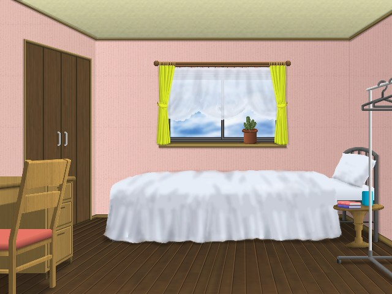
愛：
「ほら、ココがゆうちゃんの部屋よ。」
裕二：
「・・・・」
愛：
「可愛いでしょ♪」
裕二：
「・・・・・・・・」
愛：
「ゆうちゃん・・・・そんなに落ち込まないでよ？ 私も一緒に住む事にしたから。」
裕二：
「え？」
愛：
「だって、ゆうちゃんが心配だし、いつも一緒に居られるのなら・・・・ってね♪」
裕二：
「・・・・」
そりゃ俺だって、大好きな愛さんと一緒に暮らせるのは嬉しい。
でもココで居る限り、何をするにも女の子を四六時中意識していなきゃいけないってのが、
俺にとっては一番キツイものがあった。
こんな事なら、姉貴に無理やり女性としての振る舞い方を強制させられている方が、まだマシだった。
その後俺は、１０時半までゆっくりとしていて構わないと言われたので、自分に与えられた部屋で寛いでいた。
すると浅田さんが俺の部屋に着て、俺に初めての仕事を与える。
コンコン！
裕二：
「あ、はい！」
カチャ！・・・・ 浅田：
「ふふ♪ どぉ？ 気に入ってくれた？」
裕二：
「気に入るって・・・・俺は元々男だったんですよ！ こんな環境じゃ、落ち着きませんよ・・・・
浅田：
「あらそぉ？ そうそう！ この部屋はね、愛さんが以前ココで暮らしていたとき、使っていた部屋なのよ。」
裕二：
「へ、へぇ〜そうなんですか？」
そんな事、俺にとってどうでもいいこと。
ただ、なんで俺がこんな所で、自由を奪われ、女の子として暮らさなきゃいけないのか、
立派な魔女に、立派な女性に成るためだからと言って、こんな強引な方法じゃ納得できないという蟠りがあった。
俺をこの施設へ、俺の意思に関係なく放り込んだ母親に対しても怒りを覚えたが、
どうもこの浅田と言う人・・・・俺とは合わない気がする。
美人ではあるが、「この人は苦手なタイプだ」
と、俺の”許容可能女性識別アンテナ”が敏感に反応するのだ。（ゲゲゲの鬼○郎か？）
浅田：
「ところで、ゆうさんは掃除とかした事あるの？」
裕二：
「掃除？ まぁ、それなりに・・・・」
《はぁ？ 誰だって、掃除くらいした事あるだろう！？ なんで、そんな事を聞くんだ？》
浅田：
「そぉ？ じゃぁ、お洗濯や食器洗いなんかは？」
裕二：
「うぅむむ・・・・まぁ、自分から進んではしないけど・・・・でもたまには、俺だってしますよ。」
《それくらいあるさ。 子供じゃないんだぞ！ そりゃ、毎日するってわけじゃないけどさ・・・・》
浅田：
「あ、そぉ？ お料理は？」
裕二：
「料理は・・・・まぁ、チャーハンとか、野菜炒めくらいは・・・・」
《って言っても、ただ炒めてダシの素を使っての、ちょー簡単なものだけど・・・・》
浅田：
「あらそぉ？ じゃぁ、殆ど何も出来ないって言ってもいいくらいね。」
裕二：
「えっ！？・・・・」
《な、なぁ〜にぃ〜
俺は、正直ショックを受けた。
確かに、家事のスペシャリストの専業主婦に比べたら、俺の出来る事なんて取るに足らない事だろうけど、
「何も出来ない」
って、そりゃないだろうよ？
これでも、一人暮らしには自信がある方だし、やろうと思えば何でも出来ると思っていた。 魔法など使わなくても。
浅田：
「それより、その言葉遣いを直さないといけないわね？」
裕二：
「あ・・・・言葉ね。」
《やっぱり、そう来たか！》
もうココまで来た以上、俺だって覚悟は決めていた。
早く、浅田さんが認めるような女性に成りきって、一日でも早くココから出たかったから。
だから、ココで浅田さんとぶつかり合う気などなかった。・・・・が、
俺の精神が、やっぱり追い詰められる事になるのだった。
浅田：
「じゃぁ、この部屋を綺麗に掃除しなさい。」
裕二：
「掃除を？ でも、散らかってないけど・・・・？」
浅田：
「あのね、いくら散らかってないと言っても、掃除はキチンと毎日しなきゃいけないのよ。」
裕二：
「へぇ・・・・掃除なんてしなくてもいいと思うけどな。」
浅田：
「ダメです！ 言われた事は、チャンと守りなさい！ あなたは立派な女性に成るために、ココで暮らす事になったんだからね。
それは、あなたが立派な魔女に成るためにも、絶対必要な事なの！ 身の回りの事は、何でも自分でしなきゃいけないの！
ココは、ホテルや旅館じゃないのよ。 解かってるでしょ？」
裕二：
「あぁ〜もぉ〜はいはい！ 分かったよぉ！ ったく・・・・」
俺は、両手の平を軽く上に上げて肩をすくめ、いい加減な返事を返した。
すると・・・・
浅田：
「こらっ！！」
裕二：
「わっ！」
バチィ〜ン！
裕二：
「いだぁあぁ〜！！」
浅田さんが、いきなり俺の左腕をグイッと引っ張ったかと思えば、俺に背をむかせて思い切り尻を引っ叩いたのだ。
メチャクチャ痛かった。 姉貴の戒めの魔法に匹敵するくらいに。
裕二：
「いきなり何をすんだよ！！」
浅田：
「ダメでしょ！！ そんな言葉遣いじゃ！！」
裕二：
「だからって、殴らなくてもいいだろう！？」
言葉が女の子らしくないと言いたいのは判る。 でも、たかがそれだけの事で、思い切りお尻を叩かれるのは我慢できない。
俺は、ついつい反抗的になってしまう。
浅田：
「まだ、分かっていないようね？ ふんっ！」
裕二：
「へぇはっ？！」
バチィ〜ン！
裕二：
「んぃいっ！！」
また同じところを叩かれてしまった。
同じ場所を、何度も叩かれると、さすがに涙がでるほど痛くて辛い・・・
浅田：
「もう、あなたの女の子修行は始まっているのよ！！」
裕二：
「そん・・・・そんな事言ったって・・・・いちち
浅田：
「分かったの？ それとも、まだ足りない？」
裕二：
「わわっ・・・・分かりましたぁ！！」
浅田：
「ふっ・・・・じゃぁ、掃除機は階段横の物置に置いてあるから。 分かったわね？」
裕二：
「チッ！・・・・はいはい。」
浅田：
「返事は一回！！」
裕二：
「はぁい
浅田：
「じゃぁ、済んだら次は、お風呂掃除ね。」
裕二：
「ぇえっ！？ 初日から、そんなにするのぉ！？」
浅田：
「初日も何もありません！ さっきも言ったけど、もうあなたの女の子修行は・・・・」
裕二：
「わぁ〜かぁ〜りぃ〜まぁ〜しぃ〜たぁ〜〜！！」
浅田：
「なら、文句を言わないで、さっさとしなさい！」
裕二：
「はぁあぁ〜〜〜〜い
俺は、これ以上浅田さんとやり合っても仕方ないと思い、言われた通りに階段横の物置へと向かった。
階段と言っても、この施設の２階へ続く階段ではない。 ２階には小さな部屋が一つあるだけで、
ココとは別の階段から上り、そこが浅田さんの部屋となっている。
浅田さんが支持した階段とは、屋上へと繋がっているのだ。 屋上は、洗濯物干し場となっているらしい。
俺は、階段横の『物置』と書かれた扉を開けた。
どうやらココは、掃除機の他にトイレットペーパーや電球などの、細々な備品の保管場所となっているようだ。
そして、掃除機を取り出そうと、物置の中へと入って行ったのだが、一番奥に立て掛けている窓の暴風対策用らしき木の板の裏に、
鉄製の扉がある事に気付いたのだ。
俺は、何となく地下室へ続く扉だと思った。 そして、その奥に何があるのか興味が沸いた。
そっと音の立たないように、木の板を一枚ずつ避けると、ゆっくりと鉄製の扉のノブを回してみた。
クキッ！・・・・
裕二：
「・・・・開く！」
俺は、ゆっくりゆっくりと、鉄製の扉を開けた。
すると思ったとおり、地下室へと続く階段があるではないか！！
俺は、誰も来ない事を確認してから、物置の中にあった懐中電灯を持って、忍び足で地下室への階段を降りていった。
そして、地下室へ降りてみて、驚いた！
地下室には、所狭しと幾つもの棚が並べられていて、女装剤を買った魔導具店に並んでいたような品が、
棚にギッシリと並べて置かれていたのだ。 俺は、ココにある全ての品は、魔導具なんだと思った。
俺は、女装剤があるのではないか？と思い、魔導具店で買った女装剤と同じ小瓶を探して回った。
でも、女装剤らしき瓶も、女装剤の解毒剤らしき薬も見付けられなかった。
仕方なく、俺はまたいつかココへ来て、ゆっくりと見てやろうと思い、一旦は地下室から出ようとした。
そして、地下室の階段を上ろうとしたとき、ふと目に入ったものがあった。
それは、ヘッドホンのような物でもあり、防寒具の耳当てのような物でもあり・・・・
いったい何に使う物なのか分からないけど、なんとなく手に取ってヘッドホンのように頭から被り、耳に当ててみた。
・・・・だが、次の瞬間！！
シュパァ〜ン！！
裕二：
「わっ！？ なんだ！？ 何が起こった？ えっ？・・・・ぇえっ！？」
一瞬、暗い地下室が明るく照らされ、一匹の猫が駆けて来て、自分の体を通り抜けたイメージが頭に浮かんだ。
それと同時に、耳とお尻に今まで感じた事のない感覚が生まれた。
俺は、耳に当てた物を外そうとしたが、もう頭には何も無かった。
さっき頭に被って耳に当てたはずの物は、跡形も無く消え去り、そして耳には獣のような毛の感触が・・・・
裕二：
「なん！？ なんだこれ！？ えっ！？・・・・毛っ！？ なんだこりゃぁ〜！？」
なんと！！ 俺の耳が消えてなくなっている！？ いや、そうじゃない！
俺の耳が、獣のような毛の生えた大きな耳に変わっている！？
なんだ！？ いったい俺の耳はどうなってしまったと言うのだ？
嫌な予感がした俺は、慌てて地下室の階段を駆け上り、物置から抜け出すと、洗面所へと向かった。
そして、洗面所の鏡を見た俺は驚愕した！
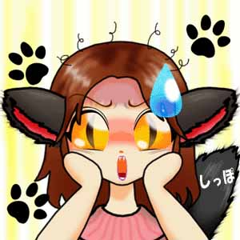
裕二：
「あんみゃぁ―――――！？ にゃんじゃこりゃぁ〜〜〜！！！！」
俺は、何が起こったのか訳が分からず、ただ自分の変わってしまった姿に唖然としていた。
そして、なんとか気持ちを落ち着かせてから、自分の耳がどう変わってしまったのか、マジマジと見てみた。
触ってみると、チャンと感覚もあるし、チャンと音も聞こえている。
猫のような耳に変わってしまっているとはいえ、チャンと耳として機能はしているようだ。
でも、どうやって元に戻るのかが分からない。
ヘッドホンのような形の物体は消え失せているから、外し方も分からなければ、この魔導具の解除法も分からない。
そこで、猫耳を引っ張ったらすっぽ抜けて、元の耳が出てくるかも？・・・・なんて思ったので、引っ張ってみた。
しかも、思い切り・・・・（おぃおぃ・・・・）
裕二：
「これって・・・・引っ張ったら、ポンッ！・・・・なんて抜けないかにゃぁ？」
グイッ！
裕二：
「んぎっ！？・・・・」
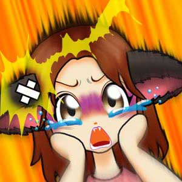
裕二：
「ふんぎゃぁあぁあぁ〜〜〜！！！！ いだぁあぁあぁ〜〜〜〜い！！！！」
何をやってんだか・・・・
メチャクチャ痛かった。 耳がちぎれるんじゃないかと思った。
どうやら、完全に耳が猫耳に変わってしまっているようだ。
すると、俺の悲鳴を聞いた施設のみんなが、洗面所へと駆けて来た。
愛：
「ゆうちゃん！？ どうしたのっ！？」
ダダダダダ！
浅田：
「なに？！ 何があったの！？」
ダダダダダ！
美鈴と清子：
「〜〜〜〜！？」
ダダダダダ！
みんな：
「あ゛っ・・・・」
みんなは、俺の変わってしまった姿を見て驚いていた。
そりゃ当たり前・・・・だって俺の耳が、猫耳に変わっているんだから。 しかも、尻尾まで生えている！
なんだか、みんなデカく見えるんだけどって・・・・俺の背が以前より、もっと低くなっている！？ あみゃぁ〜！！
裕二：
「ふぇえぇえぇえぇ〜〜〜ん どうしよぉ〜〜？」
みんな：
「・・・・・・・・・
裕二は、兎座りで両手を頬に当て、尻尾をプクゥ〜と膨らませて泣きじゃくっていた。
その姿を見た、愛さんと浅田さんは・・・・
愛と浅田：
「可愛い〜〜〜〜
裕二：
「あみゃぁ？！」
愛さんと浅田さんは、俺を本物の猫を撫でるように、小さな子供をあやすように、
俺の頭や頬を撫でたり、顎の下をコチョコチョしたり、痛いくらいに頬擦りしたりする・・・・
もう、猫耳に成ってしまった事よりも、愛さんと浅田さんにされる事の方が、俺を放心させる。
・・・・だが、そうされるのが妙に気持ちがよく、俺は愛されていると感じ、ゴロゴロと喉を鳴らしてニンマリとしていた。
裕二：
ゴロゴロゴロゴロ・・・・
「んみゃぁあぁあぁ〜〜〜〜」
愛：
「クスクスクス・・・・♪ 可愛い」
浅田：
「まったくもぉ〜この娘ってば・・・・」
美鈴と清子：
「・・・・」
でも、はっ！と我に返り、俺は浅田さんに問い詰める。
裕二：
「はっ！？・・・・浅田さぁん！ コレはにゃんですかぁ〜！？」
浅田：
「！！・・・・はぁ〜ったく・・・・あなたが身に着けたのはねぇ・・・・」
愛：
「・・・・何なんですか？」
裕二：
ドキドキドキ・・・・
浅田：
「私の娘のゆきが、去年イタズラに遊び半分で作った、猫耳人間に変身する魔導具なのよ。」
愛と裕二と美鈴と清子：
「えぇえぇえぇ〜〜〜〜〜！？」
浅田：
「試した事はなかったけど、本当に猫耳に成っちゃうのねぇ〜」
裕二：
「・・・・」
にゃんじゃそりゃぁ〜！？
猫耳人間に変身する魔導具だってぇ？！
それより、浅田さんの娘さんのゆきさんって、そんなふざけた魔導具なんて作る人なのっ！？
これで一つ分かった・・・・浅田さんの娘のゆきさんは、とんでもないイタズラ好きな人だって事が・・・・
それより、この魔法ってどうやって解くの？
ココに住む女の子達は魔術師だから、魔法だの魔導具だのという話しをしても問題無いけど、
それより、もし買い物とかに出掛けなければならないとき、こんな格好じゃ、外なんて恥ずかしくて歩けないよぉ〜
裕二：
「浅田さん！ コレ、どうやって解くんですか！？」
浅田：
「うむ・・・・実はねぇ」
裕二と愛：
「・・・・実はぁ？」
浅田：
「・・・・・・・・・・・・・・・・知らない
裕二と愛：
「はぁい？！」
浅田：
「私が、”そんな変な物を作ってはダメ！”って叱ってそれっきりだから、きっと解除する魔導具なんて開発していないと思う・・・・」
裕二：
「がぁあぁあぁ〜〜〜〜〜ん！！！！」
愛：
「あれま・・・・」
美鈴：
「クスクスクス・・・・♪」
清子：
「ぷぷぷっ♪ バカだなぁ。」
わぁ〜ん！ 最悪！！
確か、魔導具を通してかけられた魔法は、魔導具を作った本人でないと解けないはず・・・・
って事は、ゆきさんが仕事から帰って来るまで、この格好で居なきゃいけないって事ぉ？
でもこのとき、ゆきさんが帰って来れば、何も問題なく元に戻れると思った俺は、チョットした怠け案が浮かんだ。
裕二：
「そんにゃぁ〜〜！！ こんな格好じゃ、にゃんにもできにゃいよぉ〜〜！」
（うそ泣き）
愛：
「そうね・・・・どうしましょう？」
美鈴と清子：
「・・・・」
浅田：
「あなたが悪いんでしょ！ 勝手に入ってはいけない所へ入ったんだから。 自業自得よ。」
裕二：
「だってぇ〜！ こんな恥ずかしい姿にゃんて、誰にも見られたくにゃい！ 部屋でゆきさんの帰りを待ってます！」
愛と美鈴と清子：
「・・・・」
そう言って、俺が自分の部屋へ向かって歩き出したとき・・・・
浅田：
「待ちなさい！」
グイッ！
裕二：
「みぎゃ！」
浅田さんは、俺の尻尾を掴んで引き戻し、そして俺の脇を両手で持って、俺の体を持ち上げる。
俺は思わず、足をバタバタとばたつかせていた。
浅田：
「ダメよ、ゆうさん！ あなた、猫耳に成っちゃった事をネタに、与えた仕事を怠けるつもりでしょう！？」
裕二：
ギクッ！・・・・

「そ・・・・そそ・・・・そんにゃこと、にゃいですよぉ〜！ 下ろしてぇ〜」
愛：
「ぷぷっ・・・・♪ 可愛い」
美鈴と清子：
「クスクスクス・・・・♪」
「ぷぷぷぷぷっ・・・・♪」
俺は、体がまた小さくなったもんだから、浅田さんに軽々と持ち上げられてしまう。
そうなると観念するしかなく、手を握って手足を縮こませ、まるで親猫に後ろ首を噛まれて運ばれる仔猫みたいにジーとしていた。
すると浅田さんは、俺を下ろして自分の方へ振り向かせ、しゃがんで俺の肩に手を置いて怒った顔をして言う。
なんだこりゃ！？ コレじゃまるで、母親に叱られているお子ちゃまみたいじゃないか・・・・
浅田：
「だったら、そのまんまの格好でも、私が与えた仕事をチャンとしなさいっ！！」
裕二：
「ふみゃ？！ で、でも・・・・こんな格好じゃ・・・・」
浅田：
「ダメっ！ たとえ猫の耳や尻尾が生えても、掃除くらい出来るでしょ！！
何があろうと、あなたが半猫になろうと、あなたの女の子修行はやめません！！ わかったぁ！？」
裕二：
「み゛ゃっ！？ やだにゃぁ〜〜！！」
バタッ！ ジタバタジタバタ・・・・
俺は、その場に寝転んで、小っちゃな子供がイヤイヤをするように、ジタバタと手足をばたつかせていた。
浅田さんは、手を腰に当て、呆れ困った顔をして俺を見ていた。
愛さんは、口に手を当て、クスクスと笑って俺を見ていた。
あぁ、もぉ・・・・何をやってんだ俺・・・・
でも結局その後は、与えられた仕事をする羽目になった。
体が小さくなった分、掃除機が大きく感じるし、やたらと重いしで、掃除機を引っ張り回すだけでも疲れてしまう。
でも、なんとか掃除を終えて、今度は風呂場の掃除へと移った。
この施設の浴槽は、俺の家の風呂場の浴槽よりもチョット大きいだけで、風呂場の広さはそれほど変わらなかった。
それでも必死になって浴槽を洗い、床のタイルにブラシをかけて、最後に水で流すまできた。
ところが、浴槽を洗うのに使ったスポンジの泡を洗い流そうと、
蛇口の下にスポンジを持ってきて、蛇口の側のコックを回したとき・・・・
シャァアァ〜〜〜！！
裕二：
「みぎゃ！？・・・・ぶわっ！ 冷たぁい！！」
キュッ！・・・・
裕二：
「ふえぇえぇえぇ〜〜ん！ 冷たいよぉ〜〜にゃんにゃのコレぇ〜〜
蛇口から水を出そうと思っていたのに、間違えてシャワーを出してしまった
このシャワーのコックは、上に回すとシャワーになり、下へ回すと浴槽への蛇口から水が出る仕組みになっている。
俺は、何も考えずにコックを上に回してしまったものだから、シャワーから勢いよく水が飛び出し、
まともに頭から冷たい水を思い切り被ってしまった。 もう・・・・ショーツまで、びちょびちょのずぶ濡れだ。
俺は、頭をブルブル振って、濡れた髪と耳の水気を振り飛ばした。
ブルブルブルブル！
裕二：
「もぉ〜なんにゃんだよぉ今日はぁ〜！？ 最悪っ！！」
ビタン！
自分で自分に腹が立った俺は、スポンジをタイルに思い切り叩き付けた。
でも、そんな事をしていても仕方ないので、俺は濡れたまんまで風呂場の泡を洗い流した。
そして脱衣場にあったバスタオルを頭から被り、服を着替えようと自分の部屋へと向かった。
すると、清子が部屋から出てきたところに、バッタリと会ってしまった。
カチャ！・・・・
清子：
「うん？」
裕二：
「あ！・・・・」
清子：
「何したんだそれ・・・・」
裕二：
「にゃ・・・・にゃんだっていいだろう？」
清子：
「ふんっ！ どうせ蛇口とシャワーとを間違えて、水を被ってしまったんだろ？」
裕二：
ギクッ！・・・・
「う、うるさい！！ ココの風呂は初めてにゃんだよ！」
清子：
「ほぉ？ じゃぁあんたは、『シャワー』という字も読めないのか？ 小学生以下だなぁ〜なっさけねぇーな？」
裕二：
「ばほぉ！！ んなわけにゃいだろう！ ただ、何も考えずに回してしまっただけにゃよ！」
ったく、一々突っ掛かってくる奴だな
もしコイツが男なら、はっ倒してやるのに！
そんな事を思っていたが、いかんいかん！と思い直し、これ以上清子とは話さないようにし、自分の部屋へ入ろうとした。
すると、浅田さんが丁度俺の様子を見に来たのか、俺のずぶ濡れな様子を見て呆れていた。
浅田：
「！？・・・・まぁ、あなたどうしたのその格好？ ずぶ濡れじゃない！」
裕二：
「はぁい・・・・ヘクシュン！！ グシュ・・・・」
たとえ建物の中で寒くはないと言っても、これだけずぶ濡れになれば、寒いにきまってる。
裕二は、寒さに震えていた。 くしゃみと鼻水が出る・・・・
浅田：
「んもぉ〜 間違えてシャワーを出しちゃったんでしょう？」
裕二：
「あい・・・・ヘクシュン！！」
浅田：
「あらあら？ ほらほら、風邪をひいちゃうわよ！ 早く体を拭いて、着替えなさい。
あなたの部屋のクローゼットの中に、着替えを入れて置いたから。」
裕二：
「あい・・・・」
俺は、トボトボと歩き、自分の部屋へ入った。 そして、クローゼットから新しい服を取り出し着替えた。
”新しい服”と言うのは、母さんが買って揃えてくれたらしい、女の子の服だ。
あぁ・・・・また、父さんに無駄ゆう金を使わせてしまった。
俺は、何の躊躇いもなく着替えていた。 風邪をひいてはいけないし、ココで女の子の服が嫌だの何だのって言っていても仕方ない。
そのとき、尻尾をどうしようかと悩んだが、新しいショーツに履き替えたとき、自然と尻尾がスルリと抜け出した。
裕二：
「んみゃぁ？ ショーツに穴が開いてる？ さっきまで穴なんて無かったのに・・・・あっ！」
裕二は思った。 きっと母親が裕二の体が変化したときも着れるようにと、下着や服に魔法をかけてくれたのだと。
でも尻尾の部分に穴が開くのは、ショーツだけのようだ。 スカートを履いたときには何も変化は起きなかった。
スカートの他に、ズボンなどは無いかと探したが、出てくるのは色取り取りのスカートばかりだった。
こりゃ、尻尾でスカートが捲れ上がらないように、気を付けなければ・・・・・
その後、浅田さんが俺の部屋に、扇風機の様な形をしたハロゲンヒーターと温かいミルクを持ってきてくれた。
美味しい〜あたたかい なんだ浅田さんって、優しいところもあるじゃないか？
そして、なんとか体も温まったので、気分もスッカリ良くなった。
すると、浅田さんが俺を呼びに来て、これから昼食を作ると言う。
そうだった・・・・ココでは、食事も自分で作って食べるって決まってるんだっけか・・・・
浅田：
「ゆうさん！ もう平気？」
裕二：
「あ、はい。 お陰さまで・・・・」
浅田：
「そぉ。 じゃぁ、昼食の準備をしましょうか。」
裕二：
「はい。」
《今度は料理か・・・・》
俺は、浅田さんと一緒にキッチンへと向かった。

すると、先ほど紹介された女の子達と愛さんが、もうキッチンで昼食の準備を始めていた。
愛さんは、美鈴と清子の様子を見ながら、指導しているようだ。 チョット手伝ったりもするみたい。
美鈴は、野菜を流し台で洗っている。 清子は、ジャガイモやにんじんを切っているようだ。
愛：
「あ、ゆうちゃん！ 一緒に、お料理しましょう♪」
裕二：
「あ、はい・・・・ん！？」
美鈴：
ニコッ♪
裕二：
「・・・・・・・ふっ♪」
清子：
「・・・・ふんっ！」
裕二：
ムカッ・・・・
美鈴は、俺に向かって笑顔を見せてくれるが、清子は違う。
なんだか俺を受け入れてくれていないような、そんな気がする。
可愛い奴なんだけど、その態度が気に入らない。
こんな跳ねっ返りがココで暮らす事で、本当に更生できるのだろうか？と思った。
でも、以前は愛さんだって、手の付けられないほどのヤンチャ娘だったとか？ しかも、元刑余者・・・・
そんな愛さんが、今のように優しい人になったのだから、この清子って娘もいつかは更生できるのだろうか？
でもそんな事より、この清子って娘と仲良くできるのか、一緒に一つ屋根の下で暮らせるのかが不安だった。
出来る事なら、仲良くしたいと思うし・・・・
愛：
「じゃぁ、ゆうちゃんは、大き目のお鍋を出してくれる？」
裕二：
「あ、はい。」
愛：
「あ、清子ちゃん。 もチョット、小さく切った方がいいんじゃない？」
清子：
「言われなくても、わかってる！」
裕二：
「！？・・・・」
愛：
「そぉ？ じゃぁ、お願いね。」
清子：
「ふんっ！」
裕二：
プチ・・・
「・・・・・・・・」
俺は、清子に対してムカついていた。
清子は、俺に対してだけじゃなく、愛さんに対しても、今のような角の尖った態度のようだ。
裕二：
「おいっ！ にゃんだお前、その態度は？」
清子：
「ぁあん？」
裕二：
プチチ・・・・
「むぅ！・・・・ 愛さんは、お前よりもずっと年上で、しかも指導員にゃんだぞ！」
清子：
「ぁあ〜ん？ なんだよ偉そうに！ 風呂の掃除もまともに出来ないネコ耳娘なんかに、言われたくないね！」
裕二：
プチチチ・・・・
「にゃんだとぉ〜この跳ねっ返り娘めぇ！！」
清子：
「なにぃ〜！？ この猫耳チビ娘っ！！」
裕二：
「なぁ〜にぃ〜〜〜〜
清子：
「あんだよぉ〜〜〜
愛：
「ちょっとちょっと、二人とも」
美鈴：
「・・・・」
俺と清子は、鼻がくっ付くくらいに顔を寄せて、啀み合っていた。
するとそこへ、浅田さんがやって来て・・・・
浅田：
「なにをやってんの！」
裕二と清子：
「！！」
愛：
「あ、いえ・・・・なんでもないですぅ
浅田：
「愛さん！ 隠してもダメよ。 私には分かってるんだからね。」
愛：
「あはは・・・・はぁい
裕二と清子：
「・・・・」
あの愛さんが、浅田さんにタジタジ？ これには驚いた。
まさか、愛さんのそんな一面を見るなんて思いもしなかったから。
この浅田って人、もしかして愛さんが恐れるほどの人なのだろうか？
浅田：
「ゆうさん、あなたは何をしているの？」
裕二：
「んみゃぁ？ あぁ、俺は鍋を出すように言われて・・・・」
浅田：
「ダメでしょ！ そんな言葉遣いは！！」
裕二：
{{ビクッ！
}}浅田：
「チャンと、”わたし”って言わなきゃダメでしょ！」
裕二：
「・・・・」
浅田：
「ほら、ぼぉ〜っと突っ立ってないで、言われた事をしなさい！」
裕二：
「あ、はい・・・・」
あぁ〜ビックリしたぁ！
てっきり、”猫語” で喋るのがダメだと言われているのかと思った。
だって、猫語がダメと言われても、この半猫化した体だと、勝手に猫語が出ちゃうんだもん。
そこは浅田さんも、チャンと考えてくれていたようだ。
でもやっぱり、”わたし”って呼ぶのも、チョットなぁ・・・・
俺は、ここは大人しく言うとおりにしておいた方が無難だ・・・・と思った。
裕二：
キョロキョロ・・・・
「えっと・・・・鍋ってどこにあるんですか？」
愛：
「あ、お鍋なら、そこの戸棚の中に・・・・あっ！」
裕二：
「・・・・
届かない・・・・
鍋の置いてある場所とは、戸棚の上の段とのこと。 たとえ椅子を踏み台にしても、今の俺には届かない場所になる。
なんで鍋みたいな大きなものを、あんな上に置くかな・・・・普通、下の方へ置くだろう
すると浅田さんが、俺と清子の役割を交代するように言う。
清子なら、楽々と届くだろう。 清子は女の子にしては結構背が高い方？ 身長は、１７０ｃｍくらいはあるかな。
浅田：
「仕方ないわね。 じゃぁ、清子さんと交代しなさい。」
裕二：
「え？ あぁ、はい。」
《俺に野菜を切れって事か・・・・面倒だな。》
清子：
「・・・・ったく！ 役に立たない、猫耳チビ娘！」
裕二：
「にゃんだとぉ！？ そーゆぅーお前だったにゃぁ・・・・」
浅田：
「ゆうさん！！」
裕二：
{{{ビクッ！！
}}}浅田：
「いいから、言われたとおりにしなさい！」
裕二：
「はぁい・・・・
俺は、ビクビクしながら、浅田さんの言うとおりに、清子と役割を交代した。
あの愛さんがオロオロしているのが、余計に浅田さんを恐怖の存在に感じさせる。
清子は、まだ浅田さんの本当の恐ろしさを知らないから、今のような振る舞いをしているのかも？
そんな事を思いながらも、俺は野菜を切る。 背が足りないから、椅子を踏み台にして・・・・
その後は、なんとか事をこなしていたが、俺が床の保存庫から味噌を取り出そうとしていたとき・・・・
清子：
「あぁ〜もぉ〜邪魔だこの尻尾！！」
ドンッ！
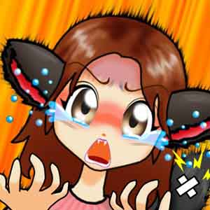
裕二：
「ふんぎゃぁあぁぁ〜〜！！！」
浅田と愛と美鈴：
「！？」
清子が、そう言って俺の尻尾を思い切り踏みつけやがった！
痛いのなんのってもぉ〜このうえなかった。
俺は、尻尾をぷっくぅ〜と膨らませて、髪を逆立てて、清子に向かって威嚇していた。
そしてとうとう、俺と清子は喧嘩になってしまった。
裕二：
「にゃにすんだよ！ このバカ娘っ！！ フゥ〜〜ハァ〜〜ッ！！」
清子：
「うるさい！ こんな狭い場所で、尻尾なんかフリフリ振り回すなよ！！
ちゃんと丸めて、ショーツの中に仕舞っておけ！！」
裕二：
「にゃぁ〜にぃ〜〜
清子：
「あんだよ、やんのかよぉ〜
裕二：
「にゃん斗神拳でボコボコにして、にゃん斗水鳥拳でバラバラにするにゃぞぉ！！！」
清子：
「なんだそりゃ？ 漫画の見過ぎだ！ この猫耳チビバカ漫画オタク娘っ！！」
裕二：
「ふぎゃぁあぁあぁ〜〜！！！」
清子：
「いててっ！ なにしやがる！！ このぉ〜！！」
バチバチッ！ ビシバシッ！ ドタンバタン！！
愛：
「あっ！ ゆうちゃん！ 清子ちゃん！ やめなさい！！」
美鈴：
「・・・・
すると、騒ぎを聞きつけた浅田さんが、ドカドカとキッチンへやって来て・・・・
浅田：
「いい加減にしなさいっ！！」
裕二と清子と愛と美鈴：
「！！・・・・」
窓のカラスが割れるのではないか？と思われるほどの、浅田さんの強烈な怒鳴り声が、瞬時にその場の全員をフリーズさせる。
浅田：
「もう、あんた達は何もしなくていいから！ 昼食抜き！ 分の部屋で反省していなさい！ 分かったぁ！？」
裕二と清子：
「！！・・・・
美鈴：
「あぁ〜あ・・・・
愛：
「ゆうちゃん・・・・
俺と清子は、ガックリと肩を落として、自分の部屋へと向かう・・・・
俺は、自分の部屋のドアを開けた。 すると、清子が俺の部屋のすぐ隣のドアを開けた。
なんだ！？ コイツ、俺の部屋の隣だったのかよ・・・・ちっ！
なんて思っていると・・・・
清子：
「あんだよ？ なにガンつけてんだぁ？」
裕二：
「うるさい！ 俺は、お前にゃんかよりも年上にゃんだぞ！ にゃにを偉そうにしてんだ？ あぁん？」
清子：
「ふんっ！ そんな猫耳チビ娘に凄まれても、ぜんぜん何とも思わねぇーよ！」
裕二：
「にゃにぃ〜！！ このアッポケナスぅ！！」
清子：
「あんだとこの化け猫娘ぇ！！」
裕二：
「むっきゃぁ〜〜！！ 言わせておけばぁ〜！！」
清子：
「うるせぇ〜チビ猫ぉ〜！！」
ポカポカ！ バリバリバリ！ ドタンバタン！！
俺と清子は、とうとう掴み合いの引っかき合いの叩き合いの喧嘩になってしまった。
まるで、姉の夏海との喧嘩のように・・・・
すると、浅田さんと愛さんが駆けつけてきて、俺達の喧嘩を止めようと割り入る。
浅田さんは清子を押さえて俺から引き剥がし、愛さんは俺を押さえて清子から引き剥がす。
浅田：
「なにやってんの！！」
愛：
「ゆうちゃん！ 清子ちゃん！ やめなさい！！」
裕二：
「ふぎゃぁ〜！！ あうぅうぅ〜〜！！ ふぎぃ〜〜！！！」
清子：
「このバカぁ！ このこのこのこのぉ！！ でやぁあぁ〜〜！！！」
ドカドカドカ！ ビシバシ！ ガリガリガリ！！
清子は、裕二の髪をつかんで、裕二の頭を揺さぶりまわし、裕二のほっぺたを叩きまくる。
裕二も負けじと、清子の腹や髪をつかむ腕を爪で引っかきまわし、清子の足を蹴りまくる。
そこへ、浅田さんと愛が止めに入るが、あまりの喧嘩の激しさに割り入ることができない。
浅田：
「こら！ いい加減にしなさい！！ やめなさいって！！」
愛：
「ゆうちゃん！ やめてぇ！！」
裕二：
「フゥ〜フゥ〜！ このぉ〜跳ねっ返りのバカ娘めぇ〜！」
清子：
「はぁ・・・はぁ・・・ ふん！ この妖怪猫耳チビ娘めっ！」
裕二：
「にゃんだとぉ！？ いっぺんにゃかしちゃろかぁ〜！！」
清子：
「出来るもんなら、やってみろよっ！！」
浅田と愛：
「やめなさいっ！！」
パチィ〜ン！！
裕二と清子：
「！！・・・・」
ジィ〜ン・・・・ジィ〜ン・・・・
浅田さんが清子の頬を、愛さんが俺の頬を、略同時に引っ叩く。
清子は、涙で目をうるうるにしながら、自分の部屋に入って行った。
俺は、大好きな愛さんに、頬を引っ叩かれた事がショックで、その場に崩れ落ちて泣き叫んでいた。
裕二：
「ふぎゃぁ〜〜わぁあぁあぁ〜〜〜ん！！ ふぇえぇえぇえぇ〜〜ん！！」
愛：
「ゆうちゃん・・・・ごめんね？ でも、ゆうちゃんったら・・・・」
浅田：
「いいのよ！ これくらい厳しくしないと。」
愛：
「はい・・・・でも。」
その後、俺は愛さんに抱き起こされて、部屋に入れられた。
俺は、ベッドに顔を埋めて泣いていた。
そして、どれくらいの時間が過ぎたか、俺は自分の部屋のドアをノックする音に目が覚めた。
いつの間にか、眠ってしまっていたようだ。

コンコン！ コンコンコンコン！
裕二：
「ふぇ？・・・・あぁーい！」
カチャ！・・・・
女性：
「お邪魔しまぁ〜っす♪ わぁ〜ホントだ！ ホントに猫耳になってる！！」
裕二：
「んみゃぁ！？」
部屋に入ってきたのは、見知らぬ女性だった。
でも、すぐにその人が誰なのか分かった。 浅田さんの娘、”ゆきさん” だ。
ゆきさんは、浅田さんに似ているとは思うけど、浅田さんよりもずっと背が低い。
今の俺よりも、チョット高いくらい？ 身長は１４０〜１４５ｃｍほどしかないのではないだろうか？
身長１７０ｃｍ以上ある浅田さんの娘なのに、なんでここまで背が低いんだろう？
年は、３１歳とかって言っていたけど、どう見ても良くて高校生くらいにしか見えない・・・・下手をすると中学生？
その訳は、後から部屋に入って来た浅田さんから聞かされた。
浅田：
「ふふふ♪ 驚いたみたいね？」
裕二：
「え？ いや・・・・その・・・・」
浅田：
「実はこの娘もね、以前は男性だったのよ。」
裕二：
「んみゃぁ！？
」浅田：
「母親の私が言うのもなんだけど、背が高くてカッコ良かったんだから♪」
裕二：
「そ、そうにゃんですか・・・・
そりゃ驚くわ！！ 目の前に居る、背の低い女性が以前は男だったなんて・・・・
でも、俺も元々は男だったのだから、浅田さんから話を聞かなくても、なんとなく理由は分かる。
人間から魔女に成った事で、魔女としての本来の体に成ったと言う事か。
きっと、このゆきさんも・・・・
ゆき：
「ふふ♪ 気付いたみたいね？ そう！ 私も、女装剤で女に成っちゃったの。 もう、何年も前にね。」
裕二：
「みぎゃ？！ うっそぉ〜！！ にゃんでにゃんでにゃんでぇ〜！？」
浅田：
「でもね、この娘ったら女の姿が気に入っちゃったみたいで、もう男に戻る気なんてないんだって。」
裕二：
「んみゃぁ！？ にゃんで！？」
ゆき：
「だって、この方が友達の男達みんなが優しくしてくれるし、欲しい物も買ってくれるし、今の仕事も上手くいってるしね♪」
浅田：
「・・・・って訳なのよ」
裕二：
「んぐぐぐぐぐ・・・・」
浅田：
「でも、男性から女性に成って、それから魔女になると、体が女性として成長しきっていない分、
実年齢よりも、かなり若くなるのねぇ〜羨ましい・・・・」
裕二：
「・・・・」
ゆき：
「くっふっふっふっふ♪ いいでしょぉ〜？」
裕二：
「・・・・・・・・
何がいいもんか！ そのお陰で俺は、精神が壊れてしまいそうだと言うのに・・・・
まぁ、ゆきさんは、現実を受け入れられたから、こうやって何も問題なく過ごせたんだろうけどね。
でも俺は、完全な男に戻って、いつか愛さんと・・・・
ゆき：
「でも、変よねぇ〜」
浅田：
「なにが？」
裕二：
「・・・・？」
ゆき：
「私は、自然と女性っぽく心が変わったって言うか、今の私になったんだけど、
ゆうちゃんは、今こうして女性として生きて行けるように、指導を受けることになったんでしょう？」
裕二：
「いや、違いますにゃよ！ 俺は、自分の意思でココへ来たんじゃにゃい！ 母さんが・・・・」
ゆき：
「ふぅ〜ん・・・・でも、女の子に成ってしまった事を、チャンと受け入れた方が楽になるのになぁ〜」
裕二：
「ゆきさんと、一緒にしにゃいでください！！」
なんて人だ・・・・女に成った事を、そんな簡単に受け入れ、今は喜んでいるなんて。
でも、この人なら女装剤について、何か知っているかも？
俺は、女装剤の解毒剤についても、何か情報が得られると思い、聞いてみる事にした。
裕二：
「それより、ゆきさん！」
ゆき：
「なぁに？」
裕二：
「女装剤の解毒剤って知ってますか？」
ゆき：
「解毒剤？ さぁ・・・・そんな物があるの？」
裕二：
「あた・・・・ んじゃ、女装剤は今も持っていますか？」
ゆき：
「持ってないわよ。 もう、全部飲んじゃったから。」
裕二：
「んみゃぁ！？ じゃ、じゃぁ・・・・女装剤の効果を無くす方法とか、何か知りませんか？」
ゆき：
「知るわけないじゃない。 私は女に成って良かったと思ってるの！ なのに、わざわざ男に戻る方法なんて、考えると思う？」
裕二：
「・・・・・・・・
ダメか・・・・この人に聞いた俺がバカだった。
でも、この猫耳に成ったのは、ゆきさんが開発した魔導具の所為なんだから、
それくらいは、何とかしてもらわないと困る。
裕二：
「・・・・じゃぁ、この猫耳を直す魔法をかけて下さい！」
ゆき：
「えぇ〜？ 可愛いのにぃ〜♪」
裕二：
「こんにゃの嫌ですぅ！！ はやく元に戻してぇ！！」
ゆき：
「そぉ〜？ 勿体無いなぁ〜こんなに可愛いのに♪」
裕二：
「あのね・・・・
ゆき：
「んじゃ、チョット待っててね。 今から元に戻す魔導具を作るから。」
裕二：
「頼みますよぉ？・・・・
そう言って、ゆきさんは地下室へと入って行った。
そして、何か色々と小さな物を持ち出してきて、自分の部屋へと閉じこもった。
それから２時間ほど経って、ゆきさんは、「探してくる」と言って、施設を出て行った。
どこへ何を探しに行ったんだろう？
俺と浅田さんは、夕食を済ませて、みんなが寝静まった後も、リビングでゆきさんの帰りを待っていた。
そして４時間ほど経って、やっと施設へ戻って来たゆきさんが、何だか困った表情をしていた。
ゆき：
「ただいま・・・・」
裕二：
「！」
浅田：
「あ、お帰りなさい。 どうだった？」
ゆき：
「ダメよ・・・・」
裕二と浅田：
「えっ？」
ゆき：
「コレを使って、あっちこっちと探したんだけど・・・・」
浅田：
「あぁ、猫探棒ね。」
裕二：
「ねこたんぼぉ？」
『猫探棒』とは、ゆきさんが以前迷い猫を探して欲しいと、近所の人に頼まれたときに作った魔導具だそうで、
見つけ出したい猫をイメージしながらフリフリ回すと、探している猫の居る方角を示すものだそうだ。
小さな釣竿のようなものの先に、紐で繋げたオモチャのネズミが付いている、猫をじゃらす道具。
確か、同じ様なものが、ペット用品でも売られていたような？ きっと、それを魔導具にしたんだろう。
でも、見付からなかったって言うけど、ゆきさんは猫を探していたのか。
猫なんて、そこらじゅうに幾らでも居るだろうに・・・・
でも、ゆきさんは猫探棒を使って遊び始める。
ゆき：
「でも、こんな使い方もあるのよ♪ ほぉ〜ら！ ほらほら！」
フリフリフリフリ〜（猫探棒を裕二に向けて振る）
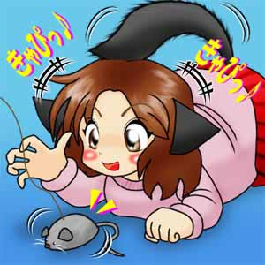
裕二：
「んみゃ！？ んにゃ！・・・・にゃ・・・・んにゃにゃ！・・・・ぶみゃ！」
浅田：
「あはははははは！ 何やってんのよ、ゆうさん！？」
裕二：
「はっ！・・・・」
ゆき：
「あははははは！ まるで、本物の猫みたいね？」
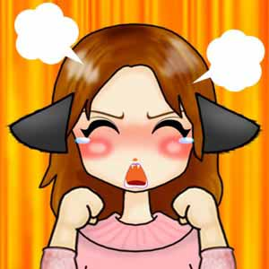
裕二：
「あ・・・・あそぶにゃぁ〜！！」
浅田とゆき：
「それは、あんたでしょ・・・・
俺は、ゆきさんが振り回す猫探棒に、思わずかぶり付いていた。
そして我に返った俺は、恥ずかしくて大声で叫ぶしかなかった。
しかし、猫を探すったって、猫ならどこにでも居るでしょ？
なにも、そんな魔導具なんて使わなくても・・・・
裕二：
「でも、猫なんてどこにでも居るでしょう？ 今日、ココへ来るときも一匹見掛けましたよ。」
ゆき：
「だって、ホントに見付からないんだもん！」
裕二：
「・・・・ じゃぁ、猫が居ないと、俺は・・・・私は元に戻らないってこと？」
ゆき：
「ま、そー言う事ね。」
裕二：
「ぇえ〜チョット待ってよぉ〜！ こんにゃ格好のまんまで、猫が見付かるまで待てって言うのぉ〜
ゆき：
「別にいいじゃなぁ〜い！ こんなに可愛いんだしぃ〜♪」
裕二：
「そんにゃぁ〜むちゃくちゃにゃぁ！！」
すると、タイミングよくテテペルが現れてくれた。
そうだ！ テテペルを使えば、俺は元に戻るかも知れない！？
そうだそうだ！ こんなところに、猫が居るじゃないか！ ・・・・って、本当の猫じゃないけど。
シュパァ〜ン！
裕二と浅田とゆき：
「！！」

テテペル：
「ご主人しゃみゃぁ〜〜！ 上手にやってみゃすかぁ〜？」
裕二：
「あっ！ テテペル！ 丁度良かった！」
テテペル：
「はみゃぁ？ にゃんの事ですにゃか？ あみゃぁ！？ ご主人しゃみゃ、にゃんですかその格好は！？」
裕二：
「その事は後で！ ゆきさん、コイツを使って出来ませんか？」
テテペル：
「うみゃ？」
裕二達が言っていることに理解できないで、首をかしげているテテペル。
そんなテテペルをお構いなしに、話をすすめる裕二達。
ゆき：
「うぅ〜むむむ。 そうねぇ〜使い魔とは言えども、猫には違いないか。 やってみようっか？」
裕二：
「うっしっ！！」
テテペル：
「あみゃぁ？」
そう言って、訳が解からず首をかしげているテテペルの毛を一本抜き、ゆきはまた自分の部屋へと閉じこもった。
ゆき：
「じゃ、待ってて！」
タッタッタッタッタ・・・・カチャ・・・・バタン！
テテペル：
「痛いみゃぁ〜 いきなり、にゃにをするんですにゃかぁ〜
裕二：
「・・・・
まったく理解できないまま、毛を一本抜かれたテテペルは、裕二に向かって怒っている。 当たり前か・・・・
裕二：
「ごめんごめん！ ちょっと猫の毛が必要だったらしくてね。 だから、テテペルの毛を一本貰ったってわけにゃよ。」
テテペル：
「んもぉ〜それにゃら、そうと言ってくれれば良かったにゃのにぃ〜
裕二：
「ごめんってぇ〜
浅田：
「クスクスクスクス・・・・♪」
そして、5分ほど待つと、ゆきさんがニコニコの笑顔で部屋から出てきた。
どうやら、猫耳から元に戻す魔導具が、完成したようだ。
ゆきさんが俺に差し出したのは、赤いポッチリが二つ付いた輪ゴムだった。
ゆき：
「ほら、コレよ！」
裕二：
「にゃに？・・・・それ？」
ゆき：
「ポッチリよ。 髪をまとめてとめる輪ゴムなのよ。」
裕二：
「もしかして、その輪ゴムで私を動けなくするとか・・・・」
ゆき：
「はぁ〜〜〜〜？」
愛：
「ぷぷっ！ クスクスクスクス・・・・♪」
俺は思わず、姉貴の呪縛の魔導具を思い出してしまった。
でも、そんなはずはないよね・・・・ゆきさんは、まだ姉貴に会った事もないのに。
愛さんは、俺が姉貴に呪縛の魔法をかけられたっていう話を知っているので、クスクスと笑っていた。
ゆき：
「何言ってるの？」
裕二：
「あ、いや・・・・あはは！ 別に・・・・」
ゆき：
「とにかく、コレで髪をとめれば元に戻るはずよ。」
裕二：
「ありがとう！」
裕二は、早速ゆきさんに、ポッチリで髪をまとめてもらった。
すると、猫耳がポン！と煙を立てて、元の普通の耳に戻った。
やった！ 尻尾も無くなってる！
背もチョット伸びて、ゆきさんよりチョット低いくらいにまで戻った。
これで一応、猫耳になる前の姿には戻ったようだ。
裕二：
「やったぁ〜！ 元に戻ったぁ〜！！ やっりぃ〜♪」
浅田とゆき：
「ふふふ♪」
裕二は、キャピキャピと、子供がはしゃぐように喜んだ。
ポッチリでまとめた髪も、ピロンピロンと飛び跳ねて、裕二を一層可愛らしく見せる。
浅田さんとゆきさんも、自分の事のように喜んでくれていた。
このとき裕二は、今自分が本物の女の子の様な、仕草や振る舞いをしている事に、まったく違和感を感じなかった。
・・・・って、今は本物の女の子だけど。
ゆき：
「でも念のために、２時間以上は付けたままにしておいてね。 完全に猫耳が治まるまでには、
じっくりと中和魔力を、当て続けた方が効果的だから。」
裕二：
「わかったぁ〜♪」
浅田：
「良かったわね。 じゃぁ、もうそろそろ寝ましょうか？ もう遅いし・・・・
ゆうさんも、夜更かししないで寝るのよ？ 明日も６時に起床ですからね。」
裕二：
「はぁ〜い！」
裕二は、元の姿に戻れたのが嬉しくて、いつになく素直なもの。
ずっと、こんな調子で素直ならいいのに・・・と、チョット苦笑気味の浅田さんとゆきさん。
浅田：
「余計な事は考えないで、ゆっくり寝るのよ。 わかったぁ？」
裕二とゆき：
「あ、はぁい。」
テテペル：
「んみゃ、アチキもご主人しゃまの部屋で、オネムしますにゃ。」
裕二：
「おう！ いいよ。」
浅田：
「じゃぁ、おやすみ。」
裕二とゆき：
「おやすみなさぁ〜い」
俺達は、各自自分の部屋へ戻って、パジャマに着替えて眠った。
そして、次の日の朝・・・・
愛：
「ゆうちゃん！ ゆう〜ちゃぁん！ 起きてっ！」
裕二：
「ふみゃ？ ふぅうぅ〜〜〜ん・・・・」
愛：
「もう、６時半過ぎてるよ！ 早く起きないと、また浅田さんに叱られるわよ。」
裕二：
「・・・・はっ！」
俺は思い出した。 そう言えば、施設で愛さんと一緒に暮らす事になったんだっけ・・・・
仕方なく、俺はのそのそとベッドから抜け出し、キッチンへと向かった。
テテペルは、まだ布団の上で丸くなっている。 いいよな猫は・・・・って、俺の使い魔なのに
裕二：
「おはよぉ〜ございますですぅ〜」
浅田：
「おはよぉ〜・・・・って、もう７時になるわよ！」
裕二：
「ひゃっ！」
浅田：
「昨日、チャンと説明したでしょ！」
裕二：
「はぁい・・・・」
浅田：
「ほら、早く顔を洗って着替えてきなさい！ 朝ご飯の支度をしますからね。」
裕二：
「は、はい！」
タッタッタッタッタ！
俺は、慌てて洗面所へ向かった。
洗面所の鏡の前には、チャンと俺の名前の書かれたコップと歯ブラシが置かれていた。
俺は、歯を磨こうと、歯ブラシに歯磨き粉を着けて、鏡に映る自分を見たとき、昨日髪をとめたポッチリが外れかけている事に気付いた。
俺は一旦、歯ブラシを置いて、ポッチリを外した。
ポッチリを着けて、もう既に数時間が経っているので、俺のネコ耳も完全に治っているだろうと思ったから。
ところが・・・・
ポンッ！
裕二：
「んみゃぁ！？ あ！・・・・あ・・・・ああ・・・・そんにゃ・・・・にゃんで・・・・」
なんと！ 俺の耳が、また猫耳に！？ 尻尾も生えて、パジャマのズボンの上から飛び出してきた。
あれれ！？ パジャマのズボンに穴が開いている？ そこから尻尾が出てきている？！
あぁ、そうか！ このパジャマにも母さんが魔法をかけてくれていたんだ。
だから、俺の体が変化したとしても、体の変化に合わせてパジャマも変化するんだ。
って、そんな事より・・・・
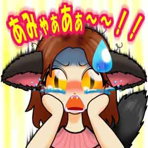
裕二：
「あみゃぁあぁあぁ〜〜！！！ にゃんでにゃのぉおぉおぉ〜〜〜！？」
なんでなんでなんでなんでぇえぇえぇ〜〜〜〜！？
ゆきさんの言うとおりに、２時間以上はポッチリを付けっ放しにしておいたのにぃ〜！！
それなのに、また猫耳化するなんて、どないなってんのぉ！？
まさか、元の姿に戻すっていう、ゆきさんの作った魔導具、失敗だったのか！？
いや、もし失敗だったなら、初めて使った時点で何も起きないはず。
そんな事を考えながら、俺は洗面所の前で座り込んで泣いてしまった。
俺の悲鳴にも似た叫び声を聞いた愛さんが、洗面所へ駆けつける。
そして、部屋から出てきたゆきさんも、俺の声にびっくりしてやって来た。
タッタッタッタッタ！
タッタッタッタッタ！
愛：
「ゆうちゃん、どうしたの！？ あっ！・・・・」
ゆき：
「なによ朝っぱらから・・・・えっ？」
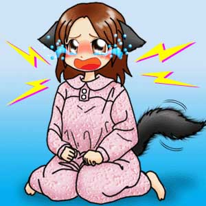
裕二：
「ふぇえぇえぇ〜〜ん！！ また、猫耳に成っちゃったぁ〜」
ゆき：
「そんな・・・・」
本当のところ、ゆきには、あまり自信がなかった。
実際に、猫耳化する魔導具に使用したように、本物の猫の毛を使わなかった事で、
確実に猫耳化を解除できる可能性は、正直なところ五分五分だろう思っていた。
なにしろ、その代用として使ったのは、裕二の使い魔のテテペルの毛だったからだ。
テテペルは、見掛けは猫だが、実体は精霊だから本物の猫ではない。
ゆき：
「やっぱり、そうか。」
裕二と愛：
「なに？！」
ゆき：
「昨日、猫を見付けられなかったから、ゆうちゃんの使い魔のテテペルの毛を使ったわけだけど、
やっぱり、本物の猫じゃないから、効果も一時的なんだ！」
裕二と愛：
「ぇえっ！？」
裕二：
「そん・・・・そんにゃぁ〜〜」
ゆき：
「やっぱり、猫耳化の魔導具の作成に使った、その猫の毛じゃないと、ダメなのかも知れないわね。」
愛：
「・・・・と、言うとやっぱり？」
ゆき：
「そっ！ だから、猫耳に成る魔導具を作るのに使用した猫の毛を使って、
猫耳化を解除する魔導具を作らないと、完全には元に戻らないってこと！
猫だからって、他の猫の毛や、使い魔の毛なんかを代用したってダメなのよ。」
裕二：
「えっ？・・・・えっ？・・・・」
愛：
「じゃぁ、猫耳になる魔導具の作成に使った猫を、探さなきゃいけないってこと？」
ゆき：
「そーゆーこと！ でも・・・・」
裕二：
「えっ？ どゆこと？ さっぱり訳ワカメ？？？」
ゆき：
「あぁ〜のぉ〜ねぇ〜」
愛：
「あれ？ ゆうちゃん、解らない？」
裕二：
「じぇんじぇん・・・・」
愛とゆき：
「・・・・」
裕二は猫耳化すると、以前よりももっと、『おバカ』になるようだ。
後にこの様な現象又は症状は、『Cat ear syndrome 猫耳症候群』と呼ばれる事になる。（にゃんじゃそれ！？）
ゆき：
「チョット、マジぃ！？ さっきの説明で解らないって、あんたの頭ん中はいったいどぉーなってんのぉ！？」
裕二：
「そんにゃ事言ったって、解んにゃいんもだもぉ〜ん！ ふぇえぇえぇえぇ〜〜ん
愛とゆき：
「・・・・」
更に、裕二は猫耳化すると、以前よりももっと、『泣き虫』になるようだ。
裕二：
「んみゃぁ〜〜〜ははぁ〜〜ん！ あんみゃぁ〜〜〜！！」
愛：
「あらら・・・・ゆうちゃん、かわいそうに」
ゆき：
「ぇえ〜！ 何よそれ？ 私が悪役ってわけぇ？ あぁ〜んもぉ〜！ 分かったわよぉ〜私が悪かったっ！
ペロリン・キャンディーあげるからぁ、泣くのはやめて！」
裕二：
「ふぇぅ？」
愛：
「キャンディーって・・・・」
ゆき：
「ペロリン・キャンディーよ、私の手の中に来い！ しゃぁ〜ぼんだぁ〜まぁ〜とぉ〜ばぁ〜そっ！」
シュピン！！
裕二と愛：
「！？」
ゆき：
「ほら、キャンディー！」
裕二：
「ふぇ？ ひっく・・・・」
ゆきは、右手人差し指をクルリと回し、物体転移魔法を使って、
自分の部屋からペロリン・キャンディーを自分の手の中に転移させ、裕二に手渡した。
ゆきの発した、『しゃぼん玉、飛ばそっ！』とは、どうやらゆきの魔法起動呪文のようだ。
愛：
「すごぉい！！ そんな事も出来るの？」
ゆき：
「はぁ？ 何をこんな程度で、驚いてんの？ ほら、キャンディーあげるから泣かないでよぉ〜」
裕二は、飛び付いて、ゆきの手から奪い取るように、ペロリンキャンディーを掴み取る。
そしてまた、兎座りで座り込み、口いっぱいにペロリンキャンディーを咥え込む。
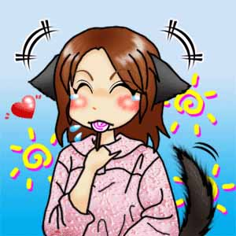
裕二：
「にゃはっ♪ パクッ！ えへ♪ おんち」
愛：
「クスッ♪ 可愛い 良かったわねぇ〜ゆうちゃん♪」
ゆき：
「・・・・」
愛は、裕二の無邪気さに、堪らず裕二の頭をナデナデする。
それを見ていたゆきは、愛に対して呆れて言う。
ゆき：
「ぇえ？ あんたも、なかなかのものね。」
愛：
「はい？ なんですかぁ？」
ゆき：
「・・・・はぁ〜〜〜〜〜 なんだか、先が思いやられるわね。」
また更に、裕二は猫耳化すると、以前よりももっと、『単純』になるようだ。
愛：
「えぇ〜〜〜っと・・・・ところで、その猫ってどんな猫なの？」
ゆき：
「うん。 でも・・・・」
裕二と愛：
「・・・・？」
ゆき：
「その猫、♀の三毛猫のだったんだけど、数ヶ月前に事故で死んじゃったのよ。」
裕二と愛：
「ぇえぇえぇ〜〜〜！？」
裕二：
「それじゃぁ、私はもう元に戻れにゃいのぉ？！」
ゆき：
「大丈夫！ なんとかするから。 きっと、元に戻れる魔導具を開発してみせる！！」
裕二：
「ホントにぃ〜？・・・・グスン！」
ゆき：
「ドキッ！・・・・ う、うん。」
愛：
「ゆうちゃん！ ゆきさんも頑張ってくれるみたいだし、そんなにガッカリしないで・・・・ね？」
裕二：
「えぅ・・・・すんすん」
愛とゆき：
《か・・・・可愛い
なんだ？・・・・愛さんとゆきさんが、俺をマジマジと見詰めている？
顔を真っ赤にして、目を潤ませて・・・・
気が付くと、俺は愛さんとゆきさんに、ナデナデされたり、頬擦りされたり、順番に抱き締められたりと、もう縫いぐるみ状態だった。
俺も始めは嫌がるんだけど、特に顎の下や尻尾の付け根をコチョコチョされると、もぉ〜堪らなくなって全身の力が抜けてしまうぅ〜
そこへ、浅田さんがやって来て、呆れた様子で話し掛けてくる。
浅田：
「ほらほら！ そんな事、いつまでやってんの？」
裕二と愛とゆき：
「はっ！・・・・」
浅田：
「・・・・ったく。 気持ちは分かるけど、はやく朝ご飯の用意をしてくれない？」
裕二と愛とゆき：
「はい・・・・」
俺は、またポッチリを髪にとめて、元の姿に戻った。
そして急いで歯を磨いて顔を洗って、一旦自分の部屋に戻ると、普段着に着替えた。
そして、キッチンへと向かったときには、既に朝ご飯は出来ていた。
間に合わなかった・・・・
浅田：
「遅いっ！ なにやってんのよぉ〜」
裕二：
「！！・・・・ごめんなさい」
愛と美鈴：
「あはは・・・・」
清子：
「ふんっ！ ノロマだな。」
裕二：
「・・・・」
朝食は、ハムエッグにソーセージと、パンか・・・・
どうりで早く出来上がってしまうわけだ。
なんだか気まずい・・・・ 愛さんも、ゆきさんも、美鈴ちゃんも、困った顔をしている。
ただ、浅田さんと清子だけは、ギロッ！と俺を睨んでいた。
浅田：
「まぁ、いいわ。 今日は特別に許してあげます。 でも、今度からはこうはいかないからね！」
裕二：
「はぁい・・・・」
浅田：
「では、朝食にしましょうか！ みんな、食堂へご飯を運んで！」
裕二と愛と美鈴：
「はぁ〜い！」
清子：
「ふん！」
食堂へご飯を運んで、みんな揃ったところで『いただきます』をし、食べ始めた。
浅田さんと、ゆきさんと、美鈴ちゃんとが並び、向かいに愛さんと、俺と、そして清子が並んで座った。
チッ！・・・・なんで清子が、俺の隣なんだよ
なんて気持ちが清子に伝わったのか・・・・
清子：
「・・・・なんだよ？ 嫌なら、美鈴と席を代わってもいいんだぞ。」
裕二：
「別に、何も言ってないだろっ！」
浅田：
「んもぉ〜あんた達は！！ 顔を合わせば喧嘩ばかりしてぇ！ 食事のときくらい、大人しくできないの？」
裕二と清子：
「・・・・」
くそっ！ 清子の所為で、また怒られちゃったじゃないか
清子は、『お前の所為だぞ！』という目をして俺を睨んでいた。
俺も、『一々突っ掛かって来るなよアッポケナス！』と心の中で罵った。
浅田さんは、そんな俺達を見て、また大きな溜息をついていた。
すると、愛さんが俺の頭を見て気付いた。 俺のポッチリが外れかけている事に。
愛：
「あれ？ ゆうちゃん、ポッチリが外れかけてるわよ。」
裕二：
「え？ そぉ？」
浅田：
「愛さん、直してあげて。」
愛：
「はい。 じゃぁ、ゆうちゃん。 じっとしていてね。」
裕二：
「うん。」
俺は、慌てていたので、ポッチリを上手く着けられなかったようだ。
元々髪をまとめるなんて、後ろ髪しかした事がないし、頭の真上なんて難しくて・・・・
って言うか、頭の上で髪をとめるのが難しいのなら、後ろでとめればいいのに・・・・
なんて後から思ったけど、そのときは思い付かなかったんだから仕方ない。（※おバカになってるから）
当然ポッチリを外してしまうと、ポンと音と煙を立てて、俺の耳が猫耳に変わり、お尻には尻尾が生えてしまう。
ポンッ！
裕二：
「・・・・」
愛：
「・・・・・・・・・」
裕二：
「どうしたの、愛姉ちゃん？」
愛：
「愛姉ちゃん！？ んもぉ〜またそう呼んでくれるなんて、嬉しい〜
裕二：
「あっ！・・・・
ゆき：
「あぁ〜！ いいなぁ〜私も、”ゆき姉ちゃん”って呼んでよぉ〜」
裕二：
「・・・・」
いかんいかん！！ ついつい愛さんの事を、『愛姉ちゃん』って呼んでしまった。
愛さんは、俺の頭を抱え込むように、俺を抱き締める。 苦しいんですけど・・・・
みんな、左右の眉毛を上下に逆に歪めて、俺を呆れた顔して見ている・・・・
清子：
「愛姉ちゃんって・・・・ガキか？」
裕二：
「うるしゃいなぁ！ にゃんだって、いいだろぉ！」
清子：
「へいへい！ あんたが猫耳だろうと、愛姉ちゃんだろうと、何だろうとあたしには関係ありませんからっ！」
裕二：
「だったら、黙ってろにゃぁ！」
愛：
「あっ！ チョットゆうちゃん！ 動いちゃダメよ。」
裕二：
「！・・・・ごみんちゃ」
浅田と美鈴とゆき：
「ぷっ♪・・・・」
裕二：
「にゃんだよぉ〜！？」
愛：
「ゆうちゃんってばぁ！ 動いちゃったら、ポッチリが上手く着けられないよぉ〜」
裕二：
「あ・・・・
浅田：
「はぁ・・・・ もぉ〜そのまんまでもいいわ。 愛さん、先に食べちゃいなさい。」
愛：
「え？・・・・あ、はい。」
裕二：
「えぇ〜！？」
浅田：
「だって、もういつもよりも遅くなってるのよ。 あなたの所為でね！ さっさと朝食を片付けちゃてよね。」
裕二：
「えぇ〜でもぉ〜！」
浅田：
「しょうがないでしょ！ あなたが、じっとしてないのが悪いのっ！」
裕二：
「だってぇ〜」
浅田：
「いいから、早く食べちゃって！！」
裕二：
「！！・・・・はぁあぁ〜〜〜〜〜い
結局、俺がじっとしてないものだから、ポッチリを着ける事さえ後回しにされてしまった。
なんだろう？ 猫耳になると、以前よりも女の子っぽく成るって言うか、いやチョット違うな・・・・
なんだか、感情が子供っぽく成ってるような？
そんな事を、あまり気にしないようにして、俺もこれ以上浅田さんに叱られたくないので、早く食べてしまおうと思った。
そしてフォークで、ソーセージを刺そうとしたとき、ツルン！と滑って、ソーセージがお皿の外へ飛び出してしまった。
それを見たとき、なんだかウズウズとしてきて・・・・そして・・・・
裕二：
「うみゃ！ にゃ・・・・にゃにゃ！」
コロコロコロ・・・・コロコロ・・・・（転がるソーセージ）
みんな：
「！！・・・・」
俺は、思わず転がるソーセージで遊んでしまった。 まるで猫がじゃれてるように・・・・
愛と美鈴とゆき：
「ぷぷぷっ♪」
ゆき：
「クスクスクス・・・・♪」
清子：
「・・・・」
浅田：
「んもぉ〜なにやってんの！？ 食べ物で遊んじゃいけません！！」
裕二：
「はっ！！・・・・」
《な、何をやってんだ俺・・・・》
俺は、また叱られてしまった・・・・
焦ってしまったので、思わず転がるソーセージを手で掴み、口に運んだ。
すると・・・・
浅田：
「こらっ！ 何してんのっ！？ お行儀が悪い！」
裕二：
「みゃ！！・・・・あっ！」
ポトッ！・・・・コロコロ・・・・
みんな：
「！・・・・」
またまた叱られちゃった・・・・ すると、口を開けたときに、ソーセージが床に落ちてしまった。
裕二：
「・・・・」
ガタッ・・・・ゴソゴソ・・・・
そして、椅子から降りて、床に落ちたソーセージを拾い上げ、またお皿に入れた。 なんだか、このまま捨ててしまうのも勿体無いし、「食べ物を粗末にしては、いけません！」なんて、叱られると思ったから。
みんな：
「！？・・・・」
浅田：
「ゆうさん？ まさか、落ちたものを食べる気じゃないわよね？」
裕二：
「うみゃ？ でも、汚れてにゃいし、勿体にゃいし・・・・」
浅田：
「バカぁ！！」
裕二：
「み゛ぎゃ！？
」浅田：
「床に落ちたものを食べてはいけませんっ！！ お行儀が悪い！！」
裕二：
「・・・・ごめんにゃさい
愛と美鈴：
「クスクスクスクス・・・・♪」
結局、また叱られてしまった・・・・
清子：
「あにやってんだよ・・・・動物かあんたは・・・・」
裕二：
「あぅ・・・・
浅田：
「はぁ〜・・・・まったく子供ね。」
裕二：
「ううぅ・・・・・・・・」
愛：
「クスクスクス・・・・可愛い」
美鈴：
「クスクスクス♪」
ゆき：
「ぷぷぷぷっ♪」
清子：
「ガキぃ！」
裕二：
「〜〜〜〜
こうして、俺の施設での暮らしが始まった。
正直、こんな事で俺が女性らしく成れるなんて思えないけど、母親もきっと俺が一日でも早く魔女として立派に成って、
そして、女装剤の解毒剤を作れるまでに成るようにと、考えてくれているのだと思い、俺も自分なりに頑張ってみる事にした。
美鈴とは、なんとか上手くやっていけそうだ。
でも、清子とはハッキリ言って、自信がない。
あいつ、一々突っ掛かってくるし、俺はともかく愛さんや浅田さんに対しての態度もゆるせない。
いつかは、必ず仲良くなりたいとは思うものの、強く反発されるとついつい俺も反発してしまうと言うか・・・・
ゆきさんは、結構浅田さんに似て気の強いところがあるようだけど、なんとか上手く付き合えそうだ。
愛さんは、別格！ 俺にとって最高の人だし、大好きな人なので、たとえどんなに厳しく指導されたとしても、きっと我慢できると思う。
それより、これから毎日ココに居る限り、俺は女の子として振舞わなければならないのが、正直辛い・・・・
上手くやってゆけるのだろうか・・・・？
（女装剤 第７話 〜新しい暮らしと猫耳と〜 つづく）
この物語は、フィクションです。
ここで使われている画像は『mao space 背景素材工房』からお借りしています。